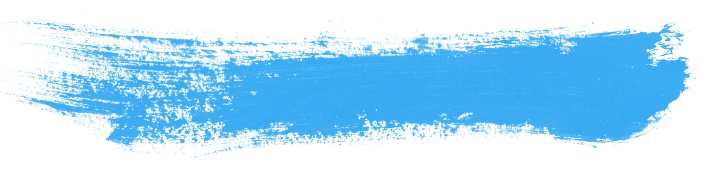
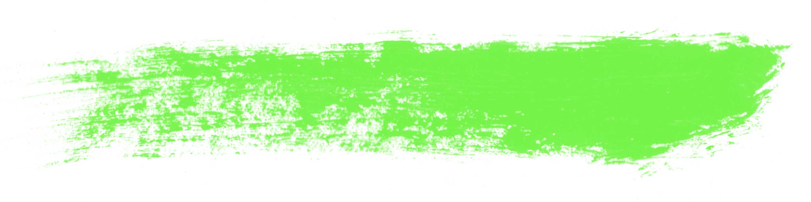
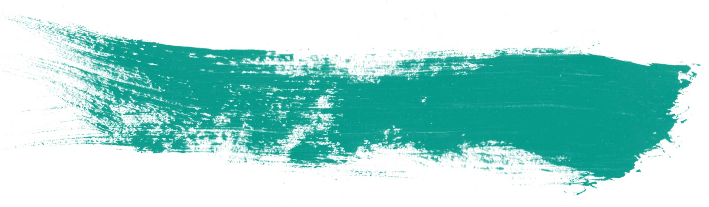
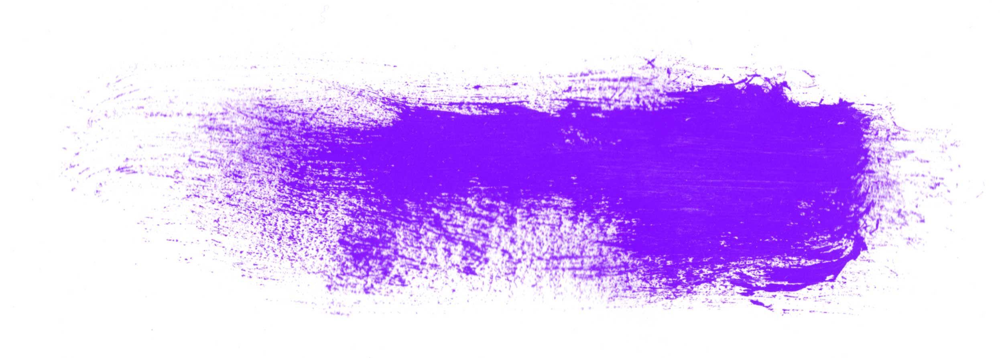

Portfolio
Campus Map
The UW Campus Map is one of the UW's most popular sites, especially at the beginning of each quarter. It's designed to be a clean, efficient tool to help navigate the UW campus for anything from classes to department locations. It has received a few accolades including Google Map of the week by the official Google Geo Developers Blog and used as an example for the future of WordPress in the 2012 State of the Word. The site is powered by WordPress, jQuery and the Google Maps API. It is also responsively designed to accommodate as many devices as possible.
UW.edu
Branding the UW's online presence began with the UW homepage. The rotating tiles showcase the top stories about the UW from sources across the internet. The tiles are automatically generated with the GD library (they were previously generated with Python's PIL library) which allows content creators to easily update, rotate and create tiles without having to open up Photoshop. This site is not responsive but does have a mobile counterpart.
UWTV
The newly branded, responsive UWTV site is our team's most recent site. The site is powered by the WordPress, thePlatform and a lot of communication between the two. The goal was to revamp the old site without changing the workflow of the UWTV team and it's production process. Making the site responsive also provides for on-the-go viewing and better access to UWTV's content.
UW Theme
A brand refresh was released last year with our new WordPress theme and is promoted throughout the UW. The core concepts that went into its design were a clean look, intuitive interface and making it responsive. Our team decided on a two column layout with content on the left and navigation on the right. This theme powers a growing list of sites with new departments joining our system every week.
150th Timeline
The UW Timeline was developed to celebrate the 150th Anniversary of the University of Washington by combining stories from the UW and its community. The tiles on the site are a mixture of official UW stories and memories submitted by the community. Click a decade and watch the years go by!
Me

I'm Dane Odekirk and I do web development.
I currently work for the UW Web Team and we do all sorts of stuff from hosting to design to development.
When I'm not working I study physics received my masters calculating Bohmian trajectories with Python, go running, paint and celebrate life.
You can find my personal code on Github but I spent most of my time committing to the web team's repo.
I'll leave you with a few of my recent works.
Have a good one.


This last one is me.